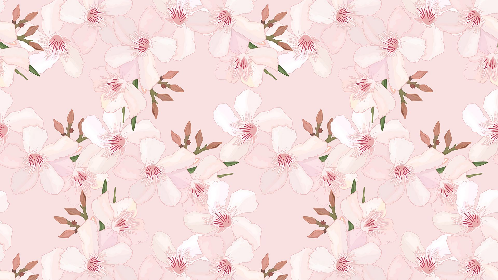

{% extends "main/base.html" %}
{% block links %}
{% endblock%}
{% block bd %}

Знаки зодиака
| Знак зодиака |
Временной промежуток |
Стихия |
| Овен | 21 марта - 20 апреля | Огонь |
| Телец | 21 апреля - 21 мая | Земля |
| Близнецы | 22 мая - 21 июня | Воздух |
| Рак | 22 июня - 22 июля | Вода |
| Лев | 23 июля - 21 августа | Огонь |
| Дева | 22 августа - 23 сентября | Земля |
| Весы | 24 сентября - 23 октября | Воздух |
| Скорпион | 24 октября - 22 ноября | Вода |
| Стрелец | 23 ноября - 22 декабря | Огонь |
| Козерог | 23 декабря - 20 января | Земля |
| Водолей | 21 января - 19 февраля | Воздух |
| Рыбы | 20 февраля - 20 марта | Вода |
{% endblock%}
{% block footer %}
© Слесарева Екатерина
{% endblock%}